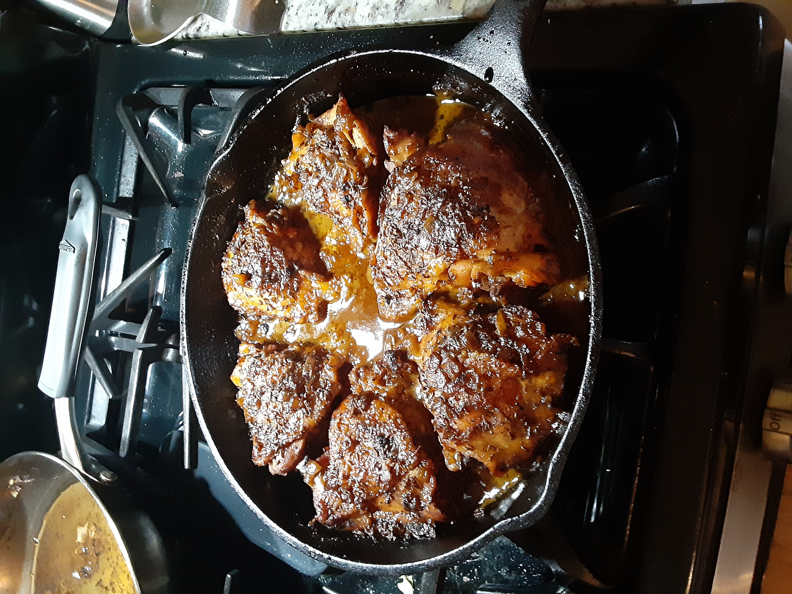

Bohemian Orange Chicken

I received a food wish for Bohemian-style duck and dumplings not too long ago, and as a long time lover of the legendarily luscious bird, I started researching enthusiastically. The duck part of the dish is very simple, flavored with little more than salt and caraway seeds, which would have been fine, especially paired with the dumplings, but then I saw a version done by Andrew Zimmern, featuring flavors from duck à l'Orange, and I decided that was the way to go. Until, I went to the market to buy duck.
I hadn't shopped for duck in a while, and I was shocked at the cost. And that's if you could even find it, as many stores didn't even carry it. That's when I decided to adapt the approach to some chicken thighs, which worked out wonderfully. Since we're trying to get as close as we can to the more flavorful duck, I must insist you use bone-in, skin-on thighs, but off the record, the seasonings, and resulting orange sauce were so good, I'm sure you'll enjoy this no matter what you use.
As with all stewed or braised dishes, the only way to screw this up is to undercook the meat. I like to start by simmering gently for an hour covered, and then continue uncovered until the meat is very tender. Do that, as well as taste and adjust the sauce for salt, and you'll be enjoying some of the finest duck-inspired chicken ever. Oh, and stay tuned for the Czech bread dumplings, which will be the next video. But no matter what you serve this Bohemian orange chicken on or with, I really do hope you give it a try soon.
Ingredients
- 8 (5 ounce) bone-in, skin-on chicken thighs
- 2 teaspoons kosher salt
- 1 tablespoon olive oil
- ½ cup diced onion
- 1 pinch kosher salt
- 1 tablespoon white sugar
- 2 cloves garlic, minced
- 1 medium orange, zested
- ⅔ cup freshly squeezed orange juice
- 2 tablespoons freshly squeezed lemon juice
- 2 cups chicken broth
- 1 pinch ground cinnamon
- 1 pinch cayenne pepper
- ⅛ teaspoon freshly ground black pepper
- 1 tablespoon caraway seeds
- 1 splash water, or as needed (Optional)
- 1 teaspoon grated orange zest
Steps
- Generously season chicken thighs on both sides with 2 teaspoons kosher salt.
-
Heat olive oil in a large cast iron skillet over high heat. Add chicken, skin-side down, to the hot oil and sear until skin is golden brown and releases from the bottom of the skillet, 4 to 5 minutes. Turn and sear on the other side for 3 to 4 minutes. Turn off the heat and remove chicken to a plate. Drain fat from the skillet and reserve for another use.
- Preheat the oven to 350 degrees F (175 degrees C).
-
Place the skillet back on the stove. Add onion, a pinch of kosher salt, and sugar. Turn heat to medium-high; cook and stir until onion turns translucent and sugar starts to caramelize on the bottom, 3 to 4 minutes. Add garlic; cook and stir until fragrant, about 30 seconds, being careful not to burn.
-
Add orange zest, orange juice, lemon juice, and chicken broth. Increase heat to high, and stir in cinnamon, cayenne, and black pepper. Stir occasionally and bring to a boil. Boil until liquids are reduced by half, 2 to 3 minutes.
-
Turn off the heat and transfer chicken and any accumulated juices back into the skillet; make sure the skin is facing up. Baste chicken with the liquid and sprinkle caraway seeds over top.
-
Cover and bake in the center of the preheated oven for 1 hour. Remove from the oven, remove the lid, and baste chicken.
-
Return to the oven and bake, uncovered, until no longer pink at the bone and the juices run clear, about 20 more minutes, adding a splash of water if the liquid dries out. An instant-read thermometer inserted near the bone should read 165 degrees F (74 degrees C).
-
Remove from the oven and baste again. Garnish with grated orange zest and serve.